原文连接:https://www.cnblogs.com/bolingcavalry/p/11429109.html
最初在tomcat上部署web应用的方式，是通过maven的maven-compiler-plugin插件先打成war包，再将war包复制到tomcat的webapps目录下，后来用上了tomcat7-maven-plugin插件，可以直接在maven上编译，打包，部署一次性完成，这个方法的关键是在tomcat上创建一个用户账号，然后maven插件用此账号和密码来执行在线部署。
本次实践中，我们要动手制作一个镜像，这个镜像run起来后是个tomcat server，这个server支持maven插件在线部署war应用。
首先是创建maven工程，这是一个spring mvc的工程，并且pom文件中使用了tomcat7-maven-plugin插件，工程里面的代码很简单，只有一个controller，返回hello页面，具体的代码可以在我的git下载，地址是：https://github.com/zq2599/blog_demos， 您也可以指执行命令git clone git@github.com:zq2599/blog_demos.git来获得，下载后整个文件夹下有多个工程，本次实战用到的是loadbalancedemo，如下图下图红框所示，建议用intellJ Idea以maven工程的形式导入：
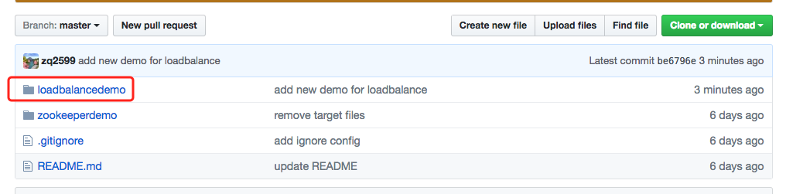
打开工程中的pom.xml文件，可以看到最底部的plugin节点的值：
<plugin> <groupId>org.apache.tomcat.maven</groupId>
<artifactId>tomcat7-maven-plugin</artifactId>
<version>2.2</version>
<configuration> <url>http://localhost:8080/manager/text</url>
<server>tomcat7</server>
<path>/${project.artifactId}</path>
<update>true</update>
</configuration>
</plugin>代码方面就先到这里，接下来我们开始制作docker镜像文件了，让我们先把准备工作做好：
- 创建一个空文件夹，例如image_tomcat；
- 去tomcat官网下载tomcat安装包，解压后，将conf文件夹下的server.xml和tomcat-users.xml这两个文件复制到前面新建的image_tomcat目录下面；
- 修改server.xml文件，如下图，在port等于8080的Connector节点增加属性URIEncoding="UTF-8"，如下图：
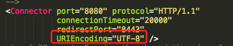
这个改动的用处是将get请求中的参数做UTF-8编码，这样我们就能在浏览器的地址栏直接输入中文参数了，改动后节点变成了：
<Connector port="8080" protocol="HTTP/1.1"
connectionTimeout="20000"
redirectPort="8443"
URIEncoding="UTF-8" />- 修改tomcat-users.xml文件，在tomcat-users节点中增加内容：
<role rolename="manager-gui"/>
<role rolename="manager-script"/>
<user username="account001" password="password001" roles="manager-gui,manager-script"/>修改后的效果如下图，红框中是新增的内容：
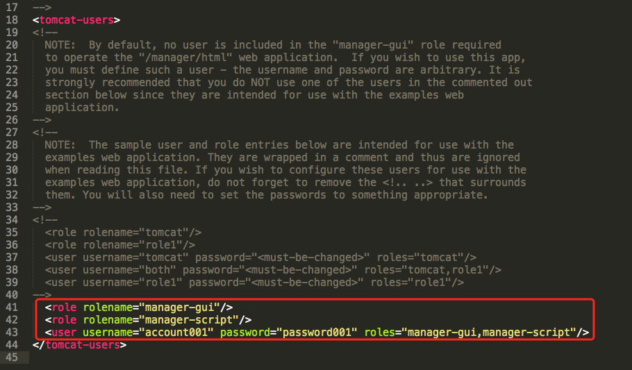
有了这些配置，就能用account001账号在对应的tomcat上进行在线部署操作了；
好了，准备工作结束，我们可以开始做docker镜像文件了，其实做镜像很简单，就是做好Dockerfile文件，再通过docker命令执行这个文件，就能生成镜像了，我们在image_tomcat目录下用编辑器新增一个文件，文件名"Dockerfile"，内容如下：
# First docker file from bolingcavalry
# VERSION 0.0.1
# Author: bolingcavalry
#基础镜像
FROM tomcat:7.0.77-jre8
#作者
MAINTAINER BolingCavalry <zq2599@gmail.com>
#定义工作目录
ENV WORK_PATH /usr/local/tomcat/conf
#定义要替换的文件名
ENV USER_CONF_FILE_NAME tomcat-users.xml
#定义要替换的server.xml文件名
ENV SERVER_CONF_FILE_NAME server.xml
#删除原文件tomcat-users.xml
RUN rm $WORK_PATH/$USER_CONF_FILE_NAME
#复制文件tomcat-users.xml
COPY ./$USER_CONF_FILE_NAME $WORK_PATH/
#删除原文件server.xml
RUN rm $WORK_PATH/$SERVER_CONF_FILE_NAME
#复制文件server.xml
COPY ./$SERVER_CONF_FILE_NAME $WORK_PATH/以上就是Dockerfile的全部内容，几个关键点如下：
- FROM tomcat:7.0.77-jre8的意思是使用tomcat:7.0.77-jre8作为基础镜像，7.0.77-jre8是tag，
- 使用了tomcat:7.0.77-jre8作为基础镜像后，通过RUN rm命令将原有的server.xml和tomcat-users.xml文件删除；
- 将我们准备工作中准备的server.xml和tomcat-users.xml文件复制到原来的conf目录下，这样就用取代了原有的文件；
打开电脑的命令行，进入image_tomcat目录，这个目录下只有这三个文件：
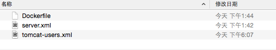
执行命令：
docker build -t bolingcavalrytomcat:0.0.1 .执行中会有类似输出：
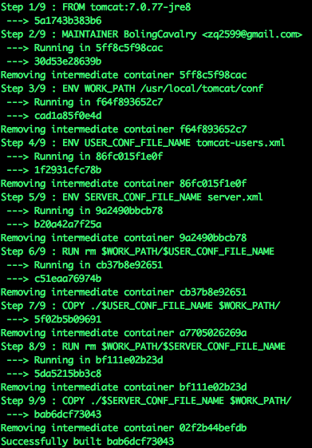
执行完毕后，输入docker images可以查看当前本机的镜像，如下图，可以看到新增的镜像：
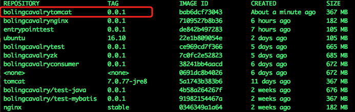
有了镜像，执行下面的命令就可以启动tomcat了：
docker run --name=tomcat001 -p 8080:8080 -e TOMCAT_SERVER_ID=tomcat_server_001 -idt bolingcavalrytomcat:0.0.1参数-e TOMCAT_SERVER_ID=tomcat_server_001的意思是在容器中设置了环境变量TOMCAT_SERVER_ID，值是tomcat_server_001
这时候再执行docker ps命令，可以看到启动的容器：
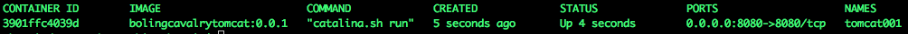
用浏览器访问localhost:8080，可以看到熟悉的页面：
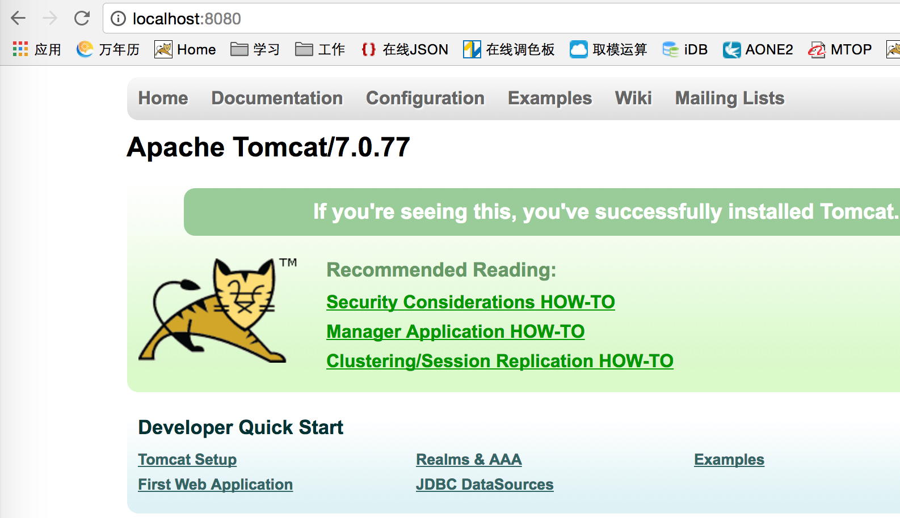
现在tomcat也启动了，代码也写好了，可以试试在线部署了么？别急，还差最后一步，打开maven的安装目录，在conf目录下找到settings.xml文件，打开后在servers节点添加以下内容:
<server>
<id>tomcat7</id>
<username>account001</username>
<password>password001</password>
</server>这就是在tomcat的tomcat-users.xml文件中配置的用户和密码，这样执行maven插件的时候就能从此处取得对应的用户名和密码去tomcat上做操作了。
回到之前的那个web工程，用命令行进入pom.xml文件所在的目录，执行命令
mvn clean package -U -Dmaven.test.skip=true tomcat7:redeploy执行结果如下：
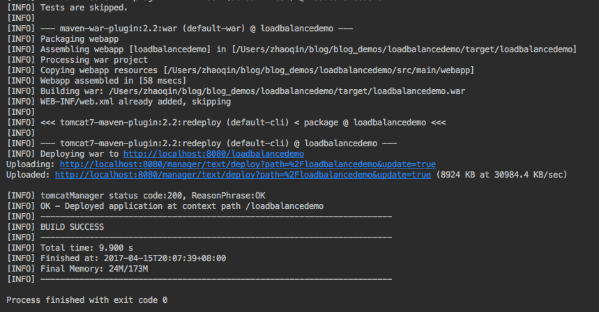
ok，tomcat7-maven-plugin插件已经帮我们把war部署到docker容器上去了，在浏览器输入
http://localhost:8080/loadbalancedemo/hello?name=张三可以看到如下效果：
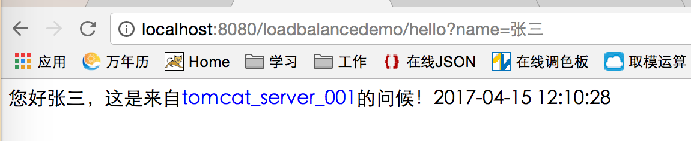
蓝色字体的tomcat_server_001就是我们启动tomcat容器时通过-e参数设置的环境变量，在HelloController中被成功取出并展示到jsp页面上，代码如下图：
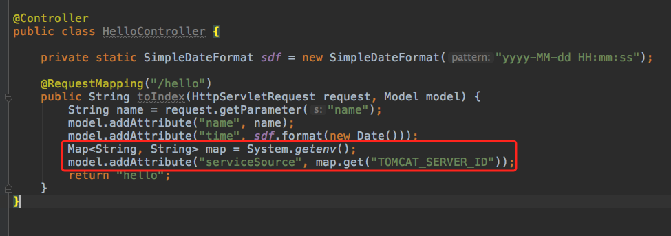
以上通过对tomcat官方镜像的一些文件操作，得到了我们自己制作的镜像文件，并结合mvn插件实现了web应用在线部署在tomcat容器上的效果，下一次实战，我们会接着这个例子启动两个tomcat容器，再在前面放一个nginx，来实现负载均衡，过程中会学到docker compose和link的相关知识。
欢迎关注我的公众号